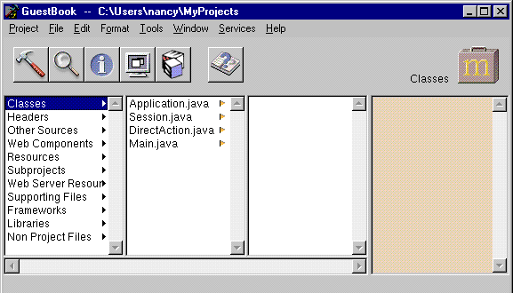

PATH
WebObjects 4.0 Documentation >
WebObjects Tools and Techniques
 Table of Contents
Table of Contents  Previous Section
Previous Section
Classes
The Classes suitcase contains Java, Web Script and Objective-C classes. For example, if your application's primary language is Java, this suitcase contains the Application.java, Session.java, DirectAction.java, and Main.java files. The files have the extension .wos if the primary language is Web Script and .m if the primary language is Objective-C . There is a class file for each component, as well as any other classes you add to the project

You can specify that Java classes are client-side, server-side, or common classes. See "Subprojects" for more information on how to do this.
Headers
The Headers suitcase contains header files for projects that use Objective-C.
Other Sources
The Other Sources suitcase contains compiled code that doesn't belong to a particular class.
Resources
The Resources suitcase contains files that are needed by your application at run time, but which do not need to be in the web server's document root (and hence will not be accessible to users). It includes:
Web Server Resources
The Web Server Resources suitcase contains files, such as images and sounds that must be under the web server's document root at run time. When developing your application, you place these files in your project directory and add them to the project (see "Adding or Deleting Items From a Project"). When you build your project, Project Builder copies the files in this suitcase into the WebServerResources folder of your application wrapper (see "The Application Wrapper").
Table of Contents  Next Section
Next Section